Ağ Güvenlik Zafiyetleri ve Saldırıları
Network Vulnerabilities, Attack Vectors & Defense Mechanics
Sunum Yol Haritasi
- Topic 1.1: What is Nmap?
- Topic 1.2: Why We Need Nmap
- Topic 1.3: Scan Types & Techniques
- Topic 1.4: Masscan
- Topic 2.1: ARP Poison
- Topic 2.2: DHCP Attacks
- Topic 2.3: DNS Cache Poison
- Topic 2.4: VLAN Hopping
- Topic 2.5: Vulnerable Services
- Topic 3.1: Microsegmentation
Nmap Nedir?
- Host Discovery: Herhangi bir ağ üzerindeki aktif host'ları, IP adreslerini ve cihazları tespit eder.
- Port Scanning: Ağ bağlantılarını dinleyen açık TCP/UDP portlarını belirler.
- Service & Version Detection: Açık portları sorgulayarak uygulama adlarını ve tam sürümlerini belirler (
-sV). - OS Fingerprinting: Hedef işletim sistemini tespit etmek için ağ yanıtlarını analiz eder (
-O).
Starting Nmap 7.94 ( https://nmap.org )
Nmap scan report for target.htb (10.10.11.20)
Host is up (0.024s latency).
PORT STATE SERVICE VERSION
22/tcp open ssh OpenSSH 8.9p1 Ubuntu
80/tcp open http Apache httpd 2.4.52
443/tcp open ssl/http Apache httpd 2.4.52
3306/tcp open mysql MySQL 8.0.35
Nmap done: 1 IP address (1 host up) scannedNmap Temel Tarama

Canlı hedef üzerinde Nmap kullanım gösterimi
Nmap Port Durumları ve Yanıtlar
RST bayrağı alır.
-sU) veya stealth taramalar (FIN/NULL) sırasında yaygın görülür. Açık portlar yanıt vermeden paketleri göz ardı eder ve bu da durumu firewall filtrelemesinden ayırt etmeyi imkansız kılar.
-sI) sırasında oluşur. Trafik bir Zombie makineden sekmektedir ancak matematiksel sonuçlar belirsizdir.
Nmap ve Raw Paketler
Normal ağ uygulamaları (tarayıcılar, SSH istemcileri, curl) işletim sisteminin üst seviye socket API'lerine dayanır:
- Standart kernel fonksiyonlarını kullanır (
connect(),send()). - İşletim sistemi çekirdeği; TCP el sıkışmalarını, sequence numaralarını ve paket bayraklarını otomatik yönetir.
- Uygulamalar alt katmandaki TCP/IP header alanlarına doğrudan müdahale edemez.
Nmap, raw network frame'lerini sıfırdan oluşturmak için üst seviye API'leri devre dışı bırakır:
- Doğrudan Paket Manipülasyonu: Özel IP/TCP başlıklarını, bayrakları (
SYN,RST,FIN) ve opsiyonları manuel olarak ayarlar. - Prob Yetenekleri: Stealth taramaları, OS fingerprinting ve özel yanıt tespitini mümkün kılar.
- Root / Sudo Yetkileri: Ham socket'ler (
SOCK_RAW) açmak root erişimi gerektirir.
TCP-SYN (Stealth) Scan (-sS)
- Yetkiler: Raw TCP paketleri oluşturmak için
sudo/ root yetkileri gerektirir. - Gizlilik Mekanizması: TCP 3-way handshake adımlarını hiçbir zaman tamamlamaz; bu sayede uygulamalar tarafından bağlantı kaydı (logging) tutulmasını önler.
-
open
Hedef
SYN-ACKile yanıt verir. Nmap portu open olarak tespit eder ve bağlantıyı sonlandırmak için hemen birRSTgönderir. -
closed
Hedef
RSTpaketi ile yanıt verir → Nmap portu closed olarak belirler.


TCP-SYN Scan: Filtrelenmiş Portlar ve Retransmission
- Yanıt Paketi Yok: Nmap geri paket almazsa (veya ICMP hatası alırsa), port durumu filtered olarak belirlenir.
- Firewall Filtreleme: Kurallara bağlı olarak firewall'lar veya router'lar gelen
SYNpaketlerini sessizce düşürebilir veya göz ardı edebilir.
- Retransmission: Hedef veya ağ yavaş/filtrelenmiş olduğunda, TCP vazgeçmeden önce birden fazla
SYNpaketi gönderir.

PORT STATE SERVICE
139/tcp filtered netbios-ssn TCP Connect Scan (-sT)
- Full Handshake: TCP 3-way handshake (
SYN→SYN-ACK→ACK) sürecini eksiksiz tamamlar. - Unprivileged Execution: Raw packet erişim yetkisi olmadığında (Nmap
sudokullanılmadan çalıştırıldığında) otomatik olarak tercih edilir. - Berkeley Sockets API: Web tarayıcılarıyla aynı şekilde işletim sisteminin standart
connect()system call mekanizmasını çağırır.
- Application Logging: Tam bir TCP session kurulduğu için hedef uygulamaların bağlantı olayını loglama olasılığı son derece yüksektir.

PORT STATE SERVICE
22/tcp open ssh UDP Scan (-sU)
| Probe Yanıtı | Atanan Durum |
|---|---|
| Hedef porttan gelen herhangi bir UDP yanıtı | open |
| Yanıt alınamadı (yeniden denemeler sonrasında) | open | filtered |
| ICMP Port Unreachable (Type 3, Code 3) | closed |
| Diğer ICMP Unreachable kodları (Code 1, 2, 9, 10, 13) | filtered |
- Stateless Protokol: UDP, TCP benzeri handshake mekanizmalarına veya SYN/ACK paket doğrulamalarına sahip değildir.
- Default Probe'lar: Nmap, portların çoğuna boş UDP paketleri gönderir. Herhangi bir hata yanıtı dönmezse, Nmap açık bir port ile firewall drop durumunu ayırt edemez → open | filtered.
PORT STATE SERVICE
53/udp open|filtered domain
67/udp open|filtered dhcpserver
111/udp open|filtered rpcbind
MAC Address: 00:02:E3:14:11:02 (Lite-on)UDP Zorlukları ve Doğrulama Yöntemleri
- Kernel Sınırlamaları: İşletim sistemleri ICMP hata paketlerinin üretilme hızını sınırlar (örneğin Linux, ICMP unreachable paketlerini saniyede ~1 ile sınırlar).
- Yüksek Tarama Hızlarının Olumsuz Etkisi:
--min-rate 1000ile hızlı taramaya zorlamak hedefin ICMP hata paketlerini drop etmesine neden olur; bu da closed portların yanlışlıkla open|filtered olarak görünmesine yol açar.
-sV)
- Payload Tabanlı Probing:
-sV(veya-A) parametresini etkinleştirmeknmap-service-probesdosyasını yükler. - Payload Tetikleme: Boş paketler yerine gerçek protokol payload'ları (örneğin DNS sorguları, SNMP istekleri) göndererek gerçek UDP yanıtlarını tetikler ve open portları doğrular.
open|filtered portlardaki belirsizliği gidermek için nping ile traceroute hop count değerlerini bilinen closed bir port ile karşılaştırın:
# Şüpheli open|filtered portu test et
nping --udp --traceroute -c 13 -p 53 target.htb
# Bilinen closed portu test et
nping --udp --traceroute -c 13 -p 54 target.htb- Analiz: Port 53 üzerindeki hop count değeri closed port (54) ile eşleşiyorsa, hedef probe paketini almış ancak ICMP yanıtını drop etmiştir $\rightarrow$ port 53 aslında closed durumundadır.
Stealth TCP Scans: NULL, FIN & Xmas
- Firewall Bypass: Non-stateful firewall yapıları,
SYNseti aktif veACKtemizlenmiş gelen bağlantı paketlerini drop ederek engeller. - Kuralları Atlatma:
SYN,RSTveyaACKflag'leri içermeyen paketler göndermek, basit SYN-filtering kurallarını atlatır.
RFC 793, standartlara uygun işletim sistemlerinin SYN/RST/ACK içermeyen beklenmeyen TCP paketlerini nasıl ele alması gerektiğini belirtir:
- closed Closed Port: Hedef sistem bir
RSTpaketi ile yanıt vermek zorundadır. - open Open Port: Hedef sistem geçersiz bir paket görür ve yanıt vermeden sessizce drop eder.
Hiçbir bit set etmez. TCP header flag alanı tamamen 0 değerindedir.
Bağlantıları kapatmak için kullanılan yalnızca TCP FIN (Finish) bitini set eder.
FIN, PSH ve URG flag'lerini aynı anda set eder ("paketi bir yılbaşı ağacı gibi ışıklandırır").
Stealth TCP Yanıtları ve Kısıtlamaları
| Probe Yanıtı | Atanan Durum |
|---|---|
| Yanıt alınamadı (yeniden denemeler sonrasında bile) | open | filtered |
TCP RST paketi döndü |
closed |
| ICMP Unreachable (Type 3, Code 1, 2, 3, 9, 10, 13) | filtered |
- RFC 793 Gereksinimi: Öncelikli olarak RFC 793 standartlarına katı şekilde uyan Linux, BSD ve Unix sistemlerde çalışır.
- Windows / Cisco Davranışı: MS Windows ve Cisco cihazları, port açık veya kapalı olsun, malformed probe'lara
RSTpaketleriyle yanıt verir; bu da tüm portların closed görünmesine yol açar.
PORT STATE SERVICE
22/tcp open|filtered ssh
80/tcp open|filtered http
81/tcp closed hosts2-ns TCP ACK Scan (-sA)
- Port Durumu Tespit Etmez: Açık portları veya
open|filtereddurumunu belirlemez. - Temel Amaç: Firewall yapısının stateful veya stateless olduğunu tespit eder.
- Probe Flag: Yalnızca
ACKflag'li probe paketleri gönderir.
- Stateless Firewall: ACK paketlerini geçirir $\rightarrow$ portlar
RSTdöner $\rightarrow$ unfiltered. - Stateful Firewall: Session tablosu tutar; oturumsuz ACK paketlerini drop eder $\rightarrow$ filtered.
| Probe Yanıtı | Atanan Durum |
|---|---|
TCP RST yanıtı |
unfiltered |
| Yanıt yok (timeout) | filtered |
| ICMP Unreachable (Type 3) | filtered |
PORT STATE SERVICE
22/tcp unfiltered ssh
80/tcp filtered http TCP Idle Scan (-sI)
- Sıfır Doğrudan Paket: Saldırgan, kendi IP adresinden hedefe doğrudan tek bir paket bile göndermeden hedefi tarar.
- Zombie Host Üzerinden Sektirme: Trafik, boşta (idle) duran bir "zombie" host üzerinden sektirilir. Hedef IDS logları masum zombie host'u saldırgan olarak kaydeder.
- TCP Payload Oluşturma: Hedef port bağlantısı talep etmek için
SYN = 1olarak ayarlar. - IP Header Spoofing: Destination IP = Target IP ve Source IP = Zombie IP olarak ayarlar!

Idle scan using zombie zombie.htb (10.10.10.50)
PORT STATE SERVICE
22/tcp open sshIdle Scan: Open Port Çalışma Mantığı
SYN-ACK gönderir. Zombie, RST ile yanıt verir ve IP ID = 31337 değerini ortaya çıkarır.SYN-ACK gönderir. Zombie, hedefe RST göndererek kendi IP ID değerini 31338 olarak artırır.IP ID = 31339 değeriyle bir RST döndürür.
Idle Scan: Closed ve Filtered Portlar
Hedef, zombie'ye talep edilmemiş bir RST gönderir. Zombie bunu yok sayar ve paket göndermez. Son probe sırasında zombie IP ID değeri yalnızca +1 kadar artar.

Hedef firewall paketi drop eder. Zombie hiçbir şey almaz ve paket göndermez. Son probe sırasında zombie IP ID değeri +1 kadar artar (closed durumundan ayırt edilemez).

Host Discovery ve Ping Flag'leri
-Pn-sn-PR-n--disable-arp-pingDebug ve Trace Flag'leri
--packet-trace--reasonsyn-ack, rst veya no-response) tam olarak görüntüler.
--stats-every=5sFirewall Evasion ve Spoofing
--source-port--source-port 53).
"Eğer trafik port 53 (DNS) üzerinden geliyorsa, meşru bir DNS trafiğidir. Geçişine izin ver."
-SNmap Scripting Engine (NSE)
NSE, kullanıcıların karmaşık ağ görevlerini, zafiyet taramalarını ve gelişmiş servis keşiflerini otomatikleştirmek için Lua script'leri yazıp paylaşmalarına olanak tanır.
Pasif keşiften aktif sızmaya (exploitation) kadar uzanan 14 farklı işlevsel kategoride düzenlenmiş 600'den fazla script.
-sC flag'i, açık portlara karşı güvenli ve hızlı standart default script setini çalıştırır.
# Default script'leri çalıştır (-sC)
sudo nmap 10.10.11.20 -sC
# Bir kategorideki tüm script'leri çalıştır (ör. vuln)
sudo nmap 10.10.11.20 --script vuln
# İsime göre belirli script'leri çalıştır
sudo nmap 10.10.11.20 --script http-enum,smb-os-discoveryNSE Script Kategorileri
authbroadcastbrutedefault-sC seçeneği kullanılarak çalıştırılan varsayılan default script'ler.discoverydosexploitexternalfuzzerintrusivemalwaresafeversionvulnIntroduction to Masscan
Masscan, Internet-scale bir port scanner'dır. Tek bir makineden saniyede 10 milyon paket ileterek tüm Internet'i 5 dakikadan kısa bir sürede tarayabilir.
Nmap vs. Masscan Comparison
Masscan, kendi custom TCP stack'ini kullandığı için bağlantıları işlemek üzere operating system'i beklemez. Paketleri asynchronously göndererek tüm internet'i altı dakikadan kısa bir sürede tarayabilir; ancak bu hıza ulaşmak için analitik derinliğin (analytical depth) neredeyse tamamını feda eder.
| Feature | Masscan | Nmap |
|---|---|---|
| Architecture | Custom TCP stack (Stateless) | OS Network Stack (Stateful) |
| Speed / Scale | Extreme (Internet-scale, millions of IPs) | Moderate (Subnets, targeted hosts) |
| OS Fingerprinting | No | Yes (-O) |
| Service Detection | Basic banner grabbing only | Deep protocol probing (-sV) |
| Scripting Engine | None | Yes (NSE scripts for vulns/auth) |
| Network Impact | Very High (Can crash network hardware) | Controlled (Dynamically adjusts timing) |
Masscan Komutları ve Hız Kontrolü
--rate <pps>Saniyedeki paket iletim hızını (packets per second) belirler (ör.--rate 100000).--bannersTCP banner grabbing özelliğini etkinleştirir (HTTP Server header'larını, SSH sürüm bilgilerini vb. yakalar).--exclude <ip>Hassas IP adreslerini veya subnet'leri tarama aralığından hariç tutar.-oJ <filename>Tarama sonuçlarını otomasyon süreçleri için yapılandırılmış JSON formatında kaydeder.
# Bir /16 subnet üzerindeki popüler web portlarını 100.000 pps hızında tara
sudo masscan -p80,443 10.10.0.0/16 --rate 100000 -oJ web_scan.json
# Banner grabbing etkinleştirilmiş 65.535 portluk tam tarama
sudo masscan -p1-65535 10.10.20.0/24 --banners --rate 25000# Hassas domain controller ve gateway cihazlarını hariç tut
sudo masscan 10.0.0.0/8 -p80 --excludefile exclude.txt --rate 50000Legacy Uzaktan Erişim: Telnet
- Köken: 1969 yılında metin tabanlı uzaktan shell erişimi için geliştirilmiştir.
- Mimari: Client, uzaktaki bir daemon (
telnetd) yapısına bağlanır. - Portlar: TCP 23 (varsayılan) ve TCP 2323 (gömülü IoT).
- İletim: Şifrelenmemiş TCP üzerinde raw 8-bit ASCII veri akışı.
Trying 10.10.11.20...
Connected to target.htb.
target login: admin
Password: Password123!
admin@target:~$ id
uid=1000(admin) gid=1000(admin)Cleartext Akışı: Kimlik bilgileri ve komutlar plaintext olarak iletilir.
Telnet Authentication Mimarisi
- Dahili Auth Yoktur: RFC 854 standartlarında herhangi bir kriptografik handshake veya authentication katmanı bulunmaz.
- Handshake Sonrası Tetikleme: Authentication süreci, Port 23 üzerindeki TCP 3-way handshake tamamlandıktan sonra başlar.
- PTY Tahsisi: Bağlantıyı karşılayan daemon (
telnetd) bir Pseudo-Terminal (PTY) arayüzü başlatır. - İşletim Sistemine Devir:
telnetd, login prompt ekranını doğrudan host üzerindeki'/bin/login'sürecine devreder.
Protocol Signaling: TELNET Commands & IAC
- Shared Data Channel: Komutlar, aktif terminal byte stream'ini paylaşır.
- IAC Prefix: IAC byte'ı (decimal
255/ hex0xFF) ile başlatılır. - User Transparency: Control character'ları ekrana yansıtılmadan sessizce yakalanır ve işlenir.
- Option Negotiation: Echo, terminal type ve window size için dinamik handshake sağlar.
# Command Structure:
[IAC (255)] [Command Code] [Option Code]
# Server Request (Enable Echo):
IAC (255) + DO (253) + ECHO (1) --> \xff\xfd\x01
# Client Agree Response:
IAC (255) + WILL (251) + ECHO (1) --> \xff\xfb\x01Mirai Botnet
- Tanım: Linux çalıştıran IP kameralar ve ev router'larını uzaktan kontrol edilen botlara dönüştürür.
- Köken & İsim: İsmini Japonca "gelecek" (未来) kelimesinden ve Mirai Nikki animesinden alır.
- Keşif (Ağustos 2016): MalwareMustDie grubu tarafından tespit edildi.
- Açık Kaynak Kod: Hack Forums sızıntısı sonrası diğer malware projelerine uyarlandı.
- İlk Kullanım: Minecraft sunucuları ve koruma firmalarına saldırıldı.
- KrebsOnSecurity & OVH (Eylül 2016): Rekor ölçekte DDoS saldırıları düzenlendi.
- Dyn Saldırısı (Ekim 2016): DNS sağlayıcısı Dyn felç edilerek Twitter, Netflix ve Reddit erişilemez kılındı.
Mirai Nikki (2011)
Güvenli Alternatif: Telnet vs SSH
SNMP Protocol Fundamentals
- Amaç: Hardware sağlığını monitor eder ve network node'larını configure eder.
- Mimari: SNMP Manager (NMS), SNMP Agent'ları poll eder.
- UDP 161: Aktif query'ler (
GET/SET) ve yanıtlar. - UDP 162: Sorgusuz event uyarısı bildirimleri (SNMP Traps).
- Ekosistem: Router'lar, switch'ler, firewall'lar, server'lar ve modem'ler.
Data Structuring: MIB & OID
- MIB (Data Dictionary): Sayısal OID'leri okunabilir isimlere eşler (map eder).
- OID (Tree Path): Noktayla ayrılmış, global namespace ağacındaki konumu belirten tamsayılar.
- Path Depth: Daha uzun zincir = daha spesifik hardware niteliği.
- Standartlaşma: Cisco, Linux ve Windows cihazlarında evrensel şema standartlaşması.
# MIB OLMADAN (Ham Sayısal Zincir):
1.3.6.1.2.1.1.1.0 = STRING: Linux target 5.15.0
# MIB İLE (Okunabilir Sembol):
SNMPv2-MIB::sysDescr.0 = STRING: Linux target 5.15.0.1.3.6.1.2.1.1.1.0iso(1) → org(3) → dod(6) → internet(1) → mgmt(2) → mib-2(1) → system(1) → sysDescr(1) → 0
SNMP Protocol Evolution
- Auth: Plaintext Community String'ler.
- Encryption: Yok (cleartext payload).
- Features: Temel
GET/SET(32-bit counter'lar). - Risk: Network sniffing saldırılarına karşı savunmasız.
- Auth: Community-based (
v2c). - Encryption: Yok (plain text string'ler).
- Features:
GETBULKdesteği ve 64-bit counter'lar eklendi. - Status: İç LAN ağlarında oldukça yaygın.
- Auth: Kriptografik USM (MD5/SHA).
- Encryption: Tam payload şifrelemesi (AES / DES).
- Control: Detaylı VACM OID kapsamlama.
- Status: Modern kurumsal standart.
Active Reconnaissance: SNMP Enumeration
SNMPv2-MIB::sysDescr.0 = STRING: Linux target 5.15.0 #98-Ubuntu SMP
SNMPv2-MIB::sysObjectID.0 = OID: NET-SNMP-MIB::netSnmpAgentOIDs.10
SNMPv2-MIB::sysContact.0 = STRING: Admin <admin@target.htb>
SNMPv2-MIB::sysName.0 = STRING: enterprise-core-router
IF-MIB::ifDescr.1 = STRING: eth0
IF-MIB::ifDescr.2 = STRING: eth1 (Internal 10.10.10.0/24)snmpwalk çalıştırırken host'unuz, hedef Agent'ı query eden SNMP Manager olarak hareket eder.
- Sistem Bilgisi:
sysDescr→ OS dağıtımı ve kernel versiyonu. - Admin Kontakları:
sysContact/sysName→ Admin e-postaları ve hostname'ler. - Interface'ler:
ifDescr/ifPhysAddress→ Dahili NIC'leri ve subnet'leri haritalandırır. - Süreçler & Yazılım:
hrSWRunName→ Aktif daemon'lar ve paketler. - Routing Tabloları:
ipRouteDest→ Dahili network topolojisi.
FTP Protocol Overview
- Origin: RFC 114 (1971); temel TCP/IP file transfer protokolü.
- Client-Server Model: Client başlatır; server dosyaları barındırır.
- Operations: File transfer, directory listing ve dosya yönetimi işlemleri.
- Persistence: 1.6M+ cihaz dünya genelinde Port 21 üzerinde açık durumda.
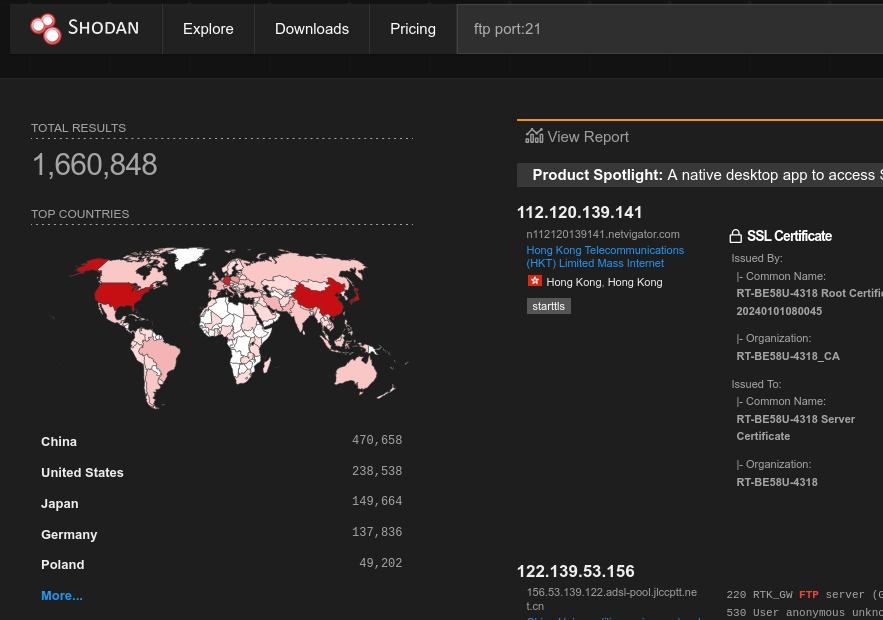
FTP Kullanım Alanları ve Sektörel İhtiyaçlar
- FileZilla ve WinSCP gibi FTP client araçlarıyla HTML, CSS ve PHP aktarımı.
- WordPress, cPanel ve IIS platformlarında dosya ve medya yönetimi.
- Bankacılık ve perakendede günlük transaction logları, DB verileri ve EDI fatura aktarımı.
- Otomatik backup daemon sistemleriyle offsite snapshot transferi.
- Cisco ve Juniper router/switch cihazlarında
startup-configve firmware güncellemeleri. - Diskless sistemlerde PXE boot ve IP telefonlarda VoIP provisioning.
- Büyük ISO imajları, yazılım paketleri ve public veri kümelerinin FTP mirror dağıtımı.
- Kurum içi yüksek boyutlu dosya transferleri.
FTP Control Connection
- Bağlantı: Client, Port 21 üzerine TCP handshake başlatır.
- Komut Alışverişi: ASCII komutlarını taşır (
USER,PASS,LIST). - Kalıcı Kanal: Tüm FTP session boyunca açık kalır.
- Kanal Ayrımı: Control ve gerçek dosya data stream yapıları birbirinden tamamen bağımsızdır.
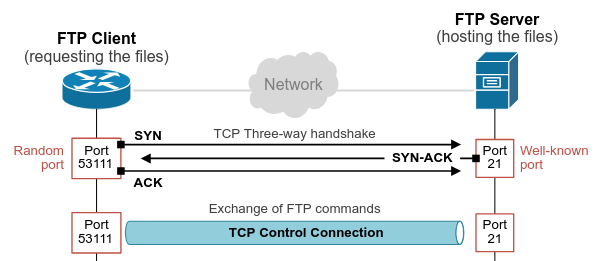
Active FTP Mode
- Çalışma Mekanizması: Client
PORTkomutu gönderir; server TCP 20 portundan client ephemeral portuna TCP SYN bağlantısı başlatır. - Firewall Engeli: Firewall ve NAT yapıları, dışarıdan gelen talep edilmemiş inbound TCP SYN paketlerini engeller — reverse connection riski.
- Ağ Kısıtlaması: Yalnızca client ve server aynı yerel ağda bulunduğunda veya özel ALG / firewall kurallarıyla çalışır.
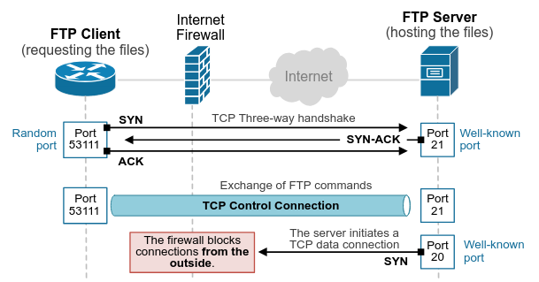
Passive FTP Mode
- Çalışma Mekanizması: Client
PASVkomutunu gönderir; server, client tarafından başlatılacak data stream için yüksek bir port atar. - Firewall Evasion: Outbound client bağlantısı çevre filtrelerini aşar — reverse shell mantığı.
- Modern Zorluk: Zero-Trust iç ağ segmentasyonu, yüksek port trafiğini giderek daha fazla filtrelemektedir.
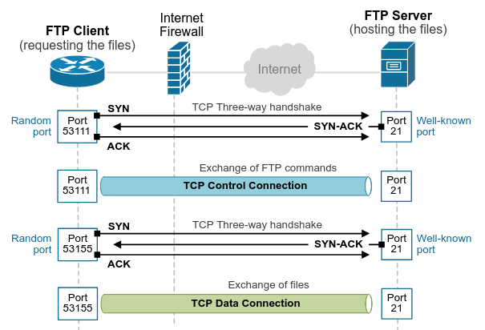
Temel FTP Saldırı Türleri
Varsayılan ya da hatalı yapılandırma nedeniyle parolasız erişim.
- Kullanıcı adı olarak
anonymousveyaftpkullanılır. - Hassas sistem dosyalarının sızmasına veya RCE için yetkisiz dosya yüklenmesine yol açabilir.
Kimlik doğrulama mekanizmasına yönelik otomatik parola denemeleri.
- Hydra veya Medusa gibi araçlarla hızlı dictionary attacks düzenlenir.
- Account lockout veya rate-limiting bulunmayan FTP server yapılarında yüksek başarı oranına sahiptir.
Şifrelenmemiş komut ve veri kanallarının dinlenmesi.
- FTP, kullanıcı adı ve parolaları (
USER/PASS) açık metin olarak iletir. - Wireshark veya tcpdump ile LAN üzerindeki tüm session bilgileri ve aktarılan dosyalar yakalanabilir.
FTP Bounce Attack
- Saldırı Vektörü: Saldırgan, FTP server sistemini üçüncü taraf bir hedefe bağlanmaya yönlendiren
PORTkomutunu gönderir. - Etki: İç firewall sistemlerini aşar, saldırgan IP adresini gizler ve dahili port scanning yapılmasını sağlar.
- Önlem: Daemon konfigürasyonunda proxying engellenmeli ve yalnızca passive mode zorunlu kılınmalıdır.
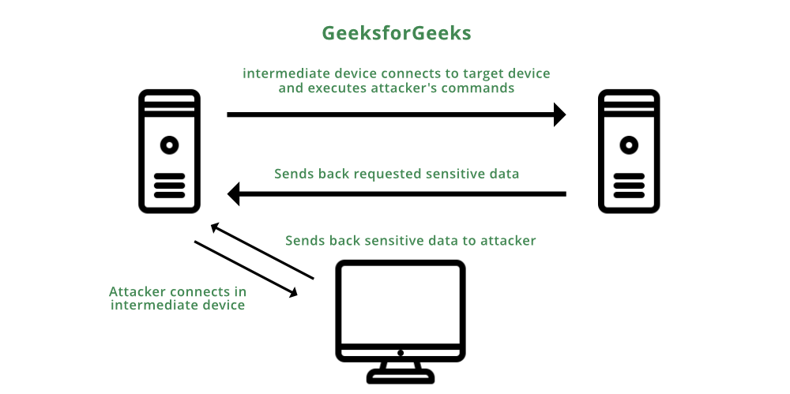
Lightweight Transfer: TFTP Protocol
- Kullanım Amacı: Firmware, router konfigürasyonları ve PXE boot imajları için hafif dosya aktarımı.
- Taşıma Protokolü: UDP 69 (ilk handshake) ve dinamik UDP data portları üzerinden çalışır.
- Connectionless Yapı: İletim garantisi veya hata kontrolü barındırmaz → daha hızlı fakat daha az güvenilir.
- Güvenlik Riski: Doğal olarak güvensizdir — kimlik doğrulama veya şifreleme mekanizması yoktur.
tftp> status
Connected to 10.129.14.150.
Mode: netascii Verbose: off Tracing: off
tftp> get router-running.cfg
Received 4096 bytes in 0.1 seconds
tftp> quitKimlik Doğrulamasız: Login istemi olmadan doğrudan dosya çekme.
Reconnaissance: FTP & TFTP Enumeration
PORT STATE SERVICE VERSION
21/tcp open ftp vsftpd 3.0.3
|_ftp-anon: Anonymous FTP login allowed (FTP code 230)
| ftp-syst:
|_ STAT: UNIX Type: L8
69/udp open tftp tftp-hpa 5.2- Service Banners: Daemon tipi ve versiyon bilgilerini elde etme (
vsftpd,ProFTPD). - Anonymous Login: Varsayılan
anonymous:anonymouskimlik bilgilerini test etme. - Dizin Denetimi:
LIST,PWDveCWDkomutlarıyla okuma/yazma yetkilerini kontrol etme. - TFTP Dosya Toplama: Hassas yedek konfigürasyonları için UDP 69 portunu sorgulama (
startup-config,id_rsa).
Man-in-the-Middle (MITM) Saldırısı
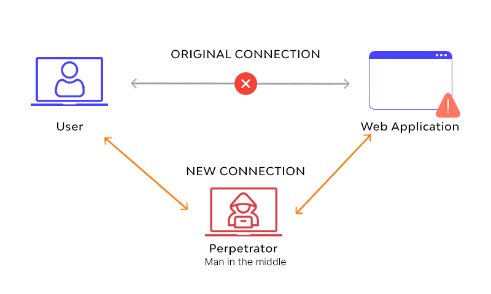
ARP Protokolü & Temel Güven Zaafiyeti
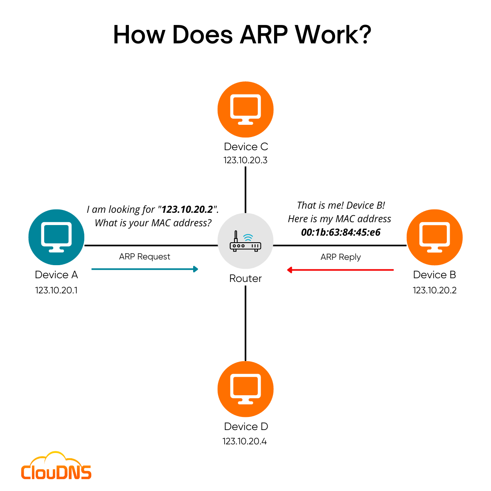
1982'de (RFC 826) dostane kapalı ağlar için tasarlandığından güvenlik mekanizması yoktur:
- Doğrulama Yok (Unauthenticated): Gelen cevabın gerçekten o IP sahibinden gelip gelmediği kontrol edilmez.
- Durumsuz (Stateless): Cihaz bir ARP isteği göndermemiş olsa bile gelen yanıtları kabul eder (Unsolicited Reply).
- Kör Güven (Blind Trust): Son gelen ARP cevabı, tablodaki önceki doğru kaydın üzerine doğrudan yazılır.
Saldırı Yöntemi B: ARP Cache Poisoning (Spoofing)
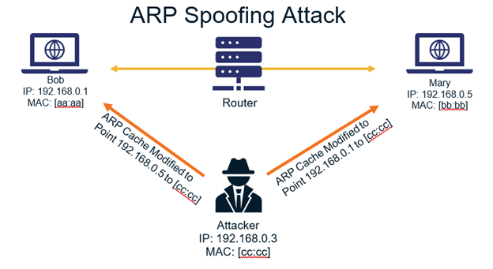
Saldırı Yöntemi A: ARP / MAC Flooding
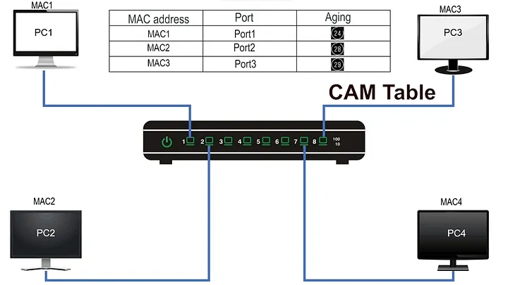
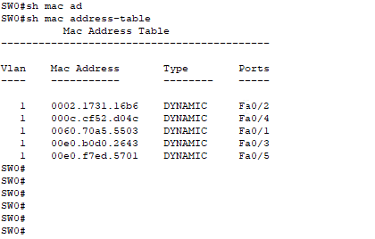
show mac address-table
Fail-Open (Hub Modu): Tablo dolunca switch tüm paketleri bütün portlara basar (Broadcast); saldırgan tüm ağı pasif dinler (Sniffing).
Beyin Fırtınası: Ortadaki Adam (MITM) Olduk, Ya Sonra?
- Şifresiz protokollerdeki (
HTTP,FTP,Telnet) kullanıcı adı ve parolaları yakalama.
- DNS sorgularına sahte IP yanıtları vererek kurbanı sahte kimlik avı (phishing) sayfalarına yönlendirme.
- Session Hijacking: Çerez ve token çalma.
- SSL Stripping: HTTPS → HTTP düşürme.
- DoS: Paketleri yönlendirmeyip düşürme.
Operasyonel Sınırlar & Kısıtlamalar
Broadcast etki alanıyla sınırlıdır:
- Yalnızca aynı alt ağdaki (Subnet / VLAN) cihazları hedef alabilir.
- ARP yönlendirilemez (non-routable); L3 Router sınırlarını aşamaz.
MITM olsa bile içerik gizlidir:
- HTTPS, SSH, VPN gibi uçtan uca şifreli protokollerde veriler okunamaz.
- HSTS mekanizması SSL Stripping girişimlerini engeller.
Ağda belirgin izler bırakır:
- Aşırı ARP trafiği ve çift MAC uyarıları IDS/IPS ve Arpwatch tarafından anında yakalanır.
DHCP Nedir & DORA Süreci
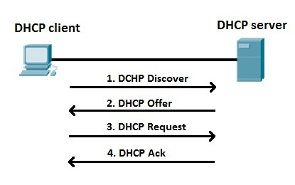
DHCP DORA Paket Analizi (Wireshark)
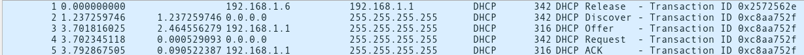
Windows İstemci Yapılandırması
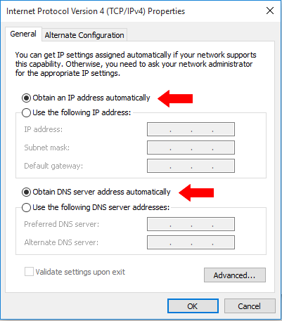
DHCP Saldırıları & Ağ Etkisi
- Açık Yayın (Broadcast Nature): Tüm DHCP Discover mesajları ağa açık yayın olarak atılır. Cihazlar gelen sunucu teklifinin meşruluğunu sorgulayamaz.
- Kimlik Kontrolü Yok: Sunucu, gelen isteğin gerçek bir istemciden mi yoksa sahte MAC adresi üreten bir saldırgandan mı geldiğini doğrulayamaz.
- Aşama 1: DHCP Starvation (Servis Dışı Bırakma): Meşru DHCP sunucusunun tüm IP havuzu tüketilir.
- Aşama 2: Rogue DHCP Server (MİTM Saldırısı): Saldırgan kendi sahte sunucusunu devreye sokarak tüm ağ trafiğini kendi üzerinden yönlendirir.
DHCP Starvation (Havuz Tüketme) Saldırısı
-
Sahte MAC ve Transaction ID: Saldırgan sürekli rastgele MAC adresleriyle
DHCP DISCOVERpaketleri yayınlar. - IP Havuzunun Dolması: Sunucu her isteği farklı bir benzersiz cihaz sanarak tüm IP'leri rezerve eder. Kullanılabilir IP kalmaz.
- Tam El Sıkışma (REQUEST / ACK): Kiralama süresini kilitlemek için tam el sıkışma tamamlanarak havuz uzun süreli felç edilir.
- Servis Dışı (DoS): Ağa katılan yeni meşru istemciler IP alamaz ve ağa erişim sağlayamaz.
DHCP Pool Exhaustion (Modem Arayüzü)
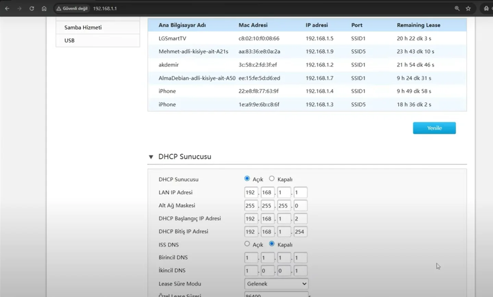
DHCP Rogue Server (Sahte Sunucu) Saldırısı
- Aktif Sahte Sunucu: Saldırgan (ör. Metasploit veya rogue cihaz) meşru sunucudan daha hızlı yanıt vererek IP dağıtır.
- Tam Trafik Hakimiyeti: Ağ katılan her yeni cihaz meşru sanarak sahte sunucudan yapılandırma alır.
- Sahte Default Gateway: İstemciye Varsayılan Ağ Geçidi olarak saldırganın IP'si verilir (Ortadaki Adam / MITM).
- Sahte DNS Sunucusu: DNS adresi olarak saldırganın IP'si verilerek istemciler phishing sitelerine yönlendirilir.
DHCP Rogue Server Saldırı Şeması
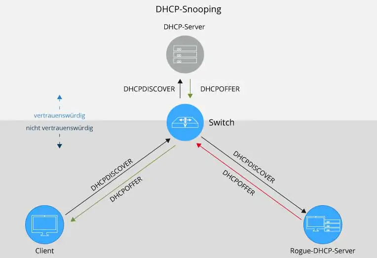
DHCP Snooping
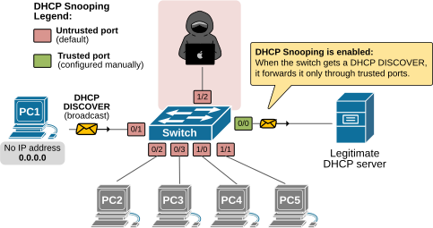
Trusted portlar, gerçek DHCP sunucularına veya router'lara bağlanır. Bu portlar DHCPOFFER ve DHCPACK gibi tüm DHCP mesajlarını gönderebilir ve alabilir.
Untrusted portlar, normal kullanıcılara veya uç cihazlara bağlanır. Yalnızca (IP isteyen) DHCPDISCOVER mesajlarını gönderebilirler. DHCPOFFER veya DHCPACK paketlerini gönderemezler / kabul edilemezler.
DNS Cache Poisoning
DNS Cache Poisoning, DNS resolver sunucusuna yetkisiz sahte yanıtlar enjekte ederek meşru alan adlarının (ör. bank.com) saldırganın kontrolündeki sahte IP adresine yönlendirilmesidir.
DNS Protokolüne Giriş
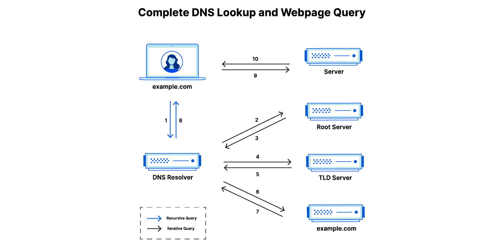
DNS Protokolü & Önbellek (Cache) Mantığı
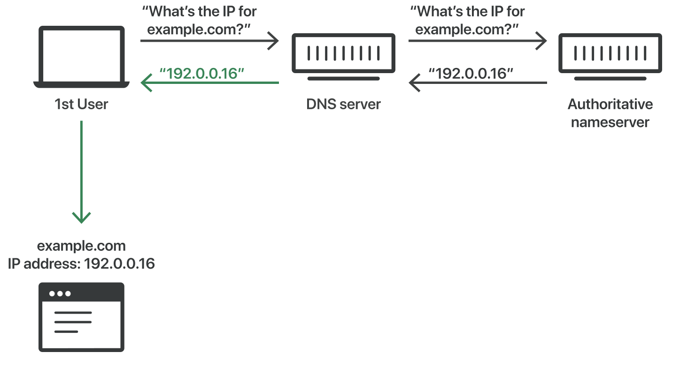
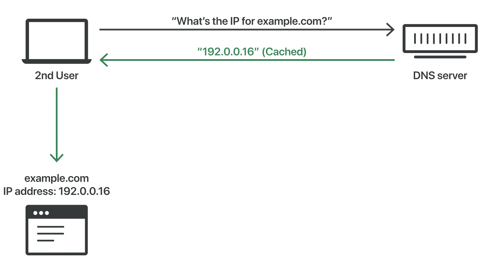
DNS Cache Poisoning Teorisi & UDP Yarışı
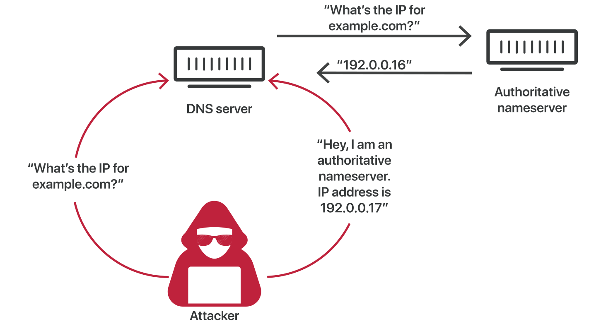
DNS Cache Poisoning vs. L2 Saldırıları (ARP / DHCP)
Saldırıyı Engellemesi Beklenen Mekanizma: Transaction ID (TXID)
Resolver giden her sorguya rastgele bir Transaction ID (0-65535) atar. Gelen yanıtın kabul edilmesi için TXID değerinin tam olarak uyuşması şarttır.
65,536 toplam olasılık, ağ hızı yüksek olan modern bir saldırganın binlerce sahte paketi kısa sürede fırlatarak doğru TXID'yi tahmin etmesi için yeterince küçüktür.
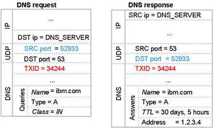
Tahmin Oyunu
-
Gerçek Sunucu Avantajı: Gerçek yetkili sunucu, saldırgana karşı 65,536'ya 1 ezici bir avantaja sahiptir.
-
Yarışı Kazanan Kuralları Koyar: Gerçek sunucu yarışı kazandığında, sonraki yarışın ne zaman olacağını TTL (Time To Live) süresi ile belirler (1 dakika, 1 saat veya 1 gün). Bu süre, yanıtın o alan adı için ne kadar geçerli kalacağını gösterir.
"Eğer bu yarış TXID'yi ilk yanıtlayanın kazandığı bir yarışsa;
'bad guy' yarışı başlatan işaret fişeğini elinde tutmaktadır."
"İkinci olarak, kim 'bad guy'ın sadece tek bir yanıt gönderebileceğini söyledi?"
Kaminsky Farkındalığı: Rastgele Subdomain Hilesi
Doğrudan www.foo.com hedeflendiğinde, 1 başarısız denemede gerçek yanıt önbelleğe yazılır. Saldırgan 24 saat boyunca o domain için kilitlenir (lockout).
Doğrudan hedefi sormak yerine önbellekte hiç bulunmayan rastgele alt alan adları istetilir: 1.foo.com, 2.foo.com ... 83.foo.com. Kaybedilse bile anında bir sonraki subdomain ile sınırsız deneme yapılır!
TTL Kilitlenmesini Aşmak
Asıl soru, 83.foo.com yarışını kazanan bir saldırganın, www.foo.com adresini de ele geçirmesi mümkün müdür?
- 1) "İşte 83.foo.com için yanıtın: 6.6.6.6"
- 2) "83.foo.com yanıtını bilmiyorum."
-
3) "83.foo.com mu? Bilmiyorum, git www.foo.com sunucusuna sor, adresi: 6.6.6.6"
Bu çalışmak zorundadır — bu sadece başka bir yetkilendirmedir (delegation):
- • 13 Root Sunucusu: "83.foo.com mu? Bilmiyorum, git com sunucusuna sor (1.2.3.4)"
- • Com Sunucusu: "83.foo.com mu? Bilmiyorum, git foo.com sunucusuna sor (2.3.4.5)"
- • Foo.com Sunucusu: "83.foo.com mu? Bilmiyorum, git www.foo.com sunucusuna sor (6.6.6.6)"
Bailiwick Kuralı (DNS Yetki Sınırı)
Resolver'ların her sahte ek bilgiyi önbelleğe almasını önleyen güvenlik mekanizması:
- Root Sunucu: Tüm internet (
.) hakkında yetki verebilir. - .com Sunucusu: Yalnızca
*.comuzantılı domainleri verebilir. - foo.com Sunucusu: Yalnızca
*.foo.comalt domainlerini verebilir.
83.foo.com | Sahte Ekstra Bilgi: google.com NS attacker.com🛑 Resolver Reddeder: "Ben sana foo.com sordum, google.com yetkisini değiştiremezsin!"
83.foo.com | Sahte Ekstra Bilgi: foo.com NS ns.attacker.com✅ Resolver Kabul Eder:
foo.com, 83.foo.com'un üst domaini olduğu için bu kayıt In-Bailiwick'tir. Resolver enjeksiyonu meşru kabul etmek ZORUNDADIR!
NS Overwrite
1. Soru: Bir şirkete gidip "3. kattaki 83 numaralı ofis nerede?" diye sorarsınız (83.foo.com).
2. Yanıt & Ekstra Bilgi: Sekreter yanıt verir: "Oda 83 orada. Bu arada, tüm binanın yeni Genel Müdürü benim ve doğrudan numaram 6.6.6.6'dır."
foo.com) yönetimini saldırgana devreder!
QUESTION SECTION:
83.foo.com. IN A
ANSWER SECTION: (Önemsiz Yanıt)
83.foo.com. IN A 6.6.6.6
AUTHORITY SECTION: (Zehir - NS Overwrite)
foo.com. IN NS ns.attacker.com.
ADDITIONAL SECTION: (Glue Record)
ns.attacker.com. IN A 1.2.3.4DNS Hijacking Etkileri & Gerçek Vaka Analizi
- Phishing (Kimlik Avı): Gerçek domainlerin (örn: paypal.com) sahte sayfalara yönlendirilmesi.
- Zararlı Yazılım Dağıtımı: Yazılım güncelleme sunucularının veya indirme sayfalarının değiştirilmesi.
- MX Poisoning (E-posta Müdahalesi): MX kayıtları değiştirilerek gelen tüm e-postaların saldırgan sunucusundan geçirilmesi.
- TLS/SSL Sertifika Bypass: Saldırganın yönlendirilen alan adı için geçerli TLS sertifikası alabilmesi.
Saldırı Senaryosu: Saldırganlar Amazon Route 53 DNS sunucularının BGP rotalarını hijack etti.
Gelişim: 2 saat boyunca MyEtherWallet DNS istekleri Rusya'daki sahte bir sunucuya yönlendirildi.
Güvenlik Duvarı Bypass & "Starter Pistols"
Kurumsal güvenlik duvarları dışarıdan gelen DNS isteklerini engeller. Saldırgan, iç ağdaki resolver'ı dışarıya sorgu atmaya zorlamak için tetikleyiciler kullanır:
- Web Tarayıcıları: Sitede gizli
<img src="http://hello.attacker.com/a.jpg">yükleme. - E-posta Sunucuları: Saldırgan domaininden e-posta göndererek anti-spam DNS kontrolünü tetikleme.
- IDS/IPS: Güvenlik sistemlerini manipüle ederek ters DNS (PTR) araması yaptırma.
1. Tetikleme: İç ağdaki cihaz hello.attacker.com adresini çözmek için kurumsal Resolver'a başvurur.
2. Kapı Açılır: Resolver dışarıya UDP 53 isteği gönderdiği an, Firewall bu porta gelen dış yanıtları geçirmeye izin verir! Yarış başlar.
3. IP Tespiti: Saldırganın Yetkili Sunucusu gelen sorgudan kurumsal Resolver'ın kamu IP adresini anında günlüğe kaydeder.
Savunma: Source Port Randomization (SPR) & Zafiyetler
Sadece 16-bit TXID (65,536 olasılık) yetersiz olduğu için DNS çözücüler her özyinelemeli sorguda dışarıya giden UDP Kaynak Portunu rastgele belirler.
- Gömülü Cihazlar & IoT: Eski uClibc kütüphaneleri kullanan kamera ve router stub-resolver'larında SPR bulunmaz.
- Özel Yönlendiriciler: Performans için sabit port kullanan şirket içi proprietary forwarding yazılımları.
- NAT "De-Randomization" (PAT): En yaygın neden! Güvenlik duvarı NAT/PAT kuralları dışarı çıkan tüm UDP 53 trafiğini tek veya sıralı sabit portlara dönüştürerek SPR korumasını yok eder.
TRAP; RESET; POISON — CGNAT Port Tüketimi (Timo, 2023)
Kullanıcı zararlı siteye çekilir. JS döngüsü ile 60,000 benzersiz alt alan adı istetilir. NAT tablosundaki tüm geçici (ephemeral) portlar kilitlenir ve geriye sadece ~10 tahmin edilebilir port bırakılır.
NAT port tablosu tıkanmış durumdayken, hedef DNS Resolver yetkili sunucuya sorgu atmaya zorlanır. NAT cihazı zorunlu olarak bilinen çok dar bir port aralığından tahsis yapar.
Dış kaynak portu artık bilindiği / tahmin edilebildiği için 16-bitlik port entropisi elenir. Saldırgan sadece 16-bitlik TXID'yi tahmin ederek zehirli paketi enjekte eder!
Network Hardening
Micro Segmentation
"Microsegmentation refers to an approach to security that involves dividing a network into segments and applying security controls to each segment based on the segment’s requirements."
Microsegmentation (continuation)
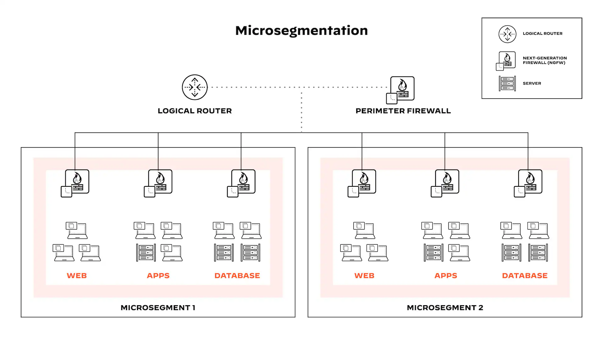
Workload Nedir?
Workload, bir uygulamayı çalıştırmak için gereken tüm kaynak ve süreçlerin genel tanımıdır.
Fiziksel bare-metal server sistemleri
Hypervisor üzerinde çalışan VM örnekleri
Docker ve K8s pod katmanları
Perimeter Security
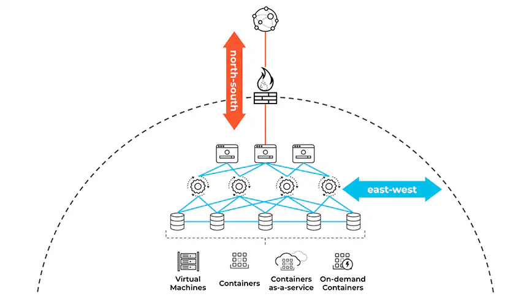
How It Works: Deployment Yöntemleri
Host makinesine veya container yapısına doğrudan bir agent yüklenir. Bu agent, workload kimliğini temel alarak trafiği kısıtlamak için işletim sisteminin yerleşik firewall mekanizmalarını (Linux iptables veya Windows Firewall gibi) yönetir.
Mevcut ağ altyapısını kullanır. İzolasyon kurallarını uygulamak için fiziksel veya sanal switch'lere, load balancer cihazlarına ve Software-Defined Networking (SDN) teknolojilerine dayanır.
Bulut platformlarının sunduğu yerleşik firewall çözümlerinden yararlanır. Cloud instance'ları etrafında sınırlar oluşturmak için AWS Security Groups, Azure Firewalls veya Google Cloud Firewall kurallarını kullanır.
Macrosegmentation vs. Microsegmentation
- Odak Noktası: North-South trafiğini (ağ sınırları ve VLAN geçişlerini) kontrol eder.
- Granularity: Coarse-grained (IP adresi, subnet ve VLAN seviyesinde geniş segmentler).
- Kısıtlama: Aynı subnet içindeki East-West trafiğini denetleyemez; tek bir host ihlal edildiğinde tüm subnet riske girer.
- Odak Noktası: East-West trafiğini (sunucular ve workload'lar arası iç trafiği) kontrol eder.
- Granularity: Fine-grained (kimlik, etiket, süreç ve uygulama bazlı hassas sınırlar).
- Avantaj: Aynı IP subnet'i üzerindeki workload'ları bile izole eder; lateral movement hamlelerini durdurur.
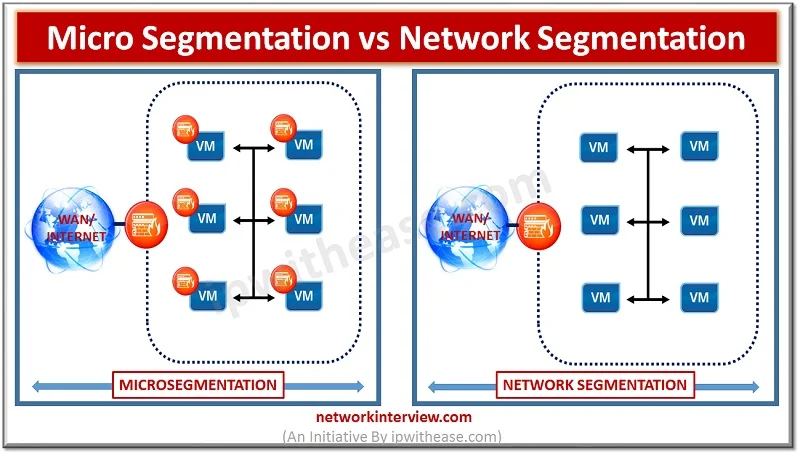
Identity-Based Policy Engine
Geleneksel firewall yapılarında kurallar sabit IP adresleri veya subnet aralıkları kullanılarak yazılırdı:
- Kısıtlama: Cloud ve K8s ortamlarında container ve VM'ler sürekli yeniden başladığı için IP adresleri değişir (IP drift). Sabit IP kuralları geçersiz hale gelir veya güvenlik açıkları oluşturur.
IP adresleri yerine her workload oluşturulduğunda dinamik etiketler (metadata tags) atanır:
- Avantaj: Yeni container'lar otomatik olarak etiketleri devralır; elle IP kuralı yazmaya gerek kalmadan firewall politikaları anında uygulanır.
Static IP vs. Identity Policies
| Feature | Static IP Rules (Traditional) | Identity-Based Policies (Microsegmentation) |
|---|---|---|
| Identifier | Hardcoded IP Addresses (10.10.1.5) |
Dynamic Labels & Tags (role=web, env=prod) |
| Cloud / K8s Desteği | Zayıf (IP adresleri değiştiğinde kurallar bozulur) | Native (auto-scaling süreçlerine otomatik uyum sağlar) |
| Okunabilirlik | Düşük (172.16.4.12 adresinin ne yaptığını anlamak zordur) |
Yüksek (app=finance gibi net iş mantığı tanımları sunar) |
| Güvenlik Riski | Yüksek (eski kalmış kurallar ve IP geri dönüşüm riskleri) | Zero Trust (en katı kimlik doğrulama kontrolleri) |
Module Summary
Key Takeaways & Core Concepts Overview